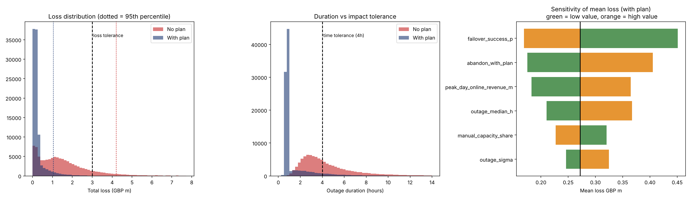

suhas102 / projects / disruption-monte-carlo
Monte Carlo disruption simulation
Online checkout outage during peak trading week.

Questions
How large could the loss be, how likely is the outage to exceed our impact tolerance, and how much risk does the continuity plan remove?
Approach
100,000 simulated outages: random start time (loss depends on the hourly demand profile), lognormal duration (fat tail), customer abandonment, goodwill compensation, and two policies: no plan vs plan (faster detection and decisions, a warm failover that works 75% of the time, a manual ordering channel, customer comms). Impact tolerance assumed at 4 hours and GBP 3m. Every input is an illustrative assumption listed in one block at the top of the script so a reviewer can challenge it.
Results (illustrative)
| No plan | With plan | |
|---|---|---|
| Mean loss | GBP 1.58m | GBP 0.27m |
| 95th percentile loss | GBP 4.20m | GBP 1.04m |
| Chance outage exceeds 4h tolerance | 46% | 8% |
| Chance loss exceeds GBP 3m tolerance | 13% | 0.4% |
Sensitivity: the result depends most on whether the failover actually works (75% assumed), then on abandonment and on peak-day revenue. Failover reliability is the assumption to test, not trust.
What I would tell leadership
The plan is worth much more than its cost only if the failover has been tested. Run a live failover exercise before peak and track the failover success rate as a KRI.
Limitations
Revenue, abandonment and failover figures are assumptions, not data, so absolute GBP values are not predictions. The value is in comparing options and showing which assumptions matter. Replace the inputs with real BIA and incident history.